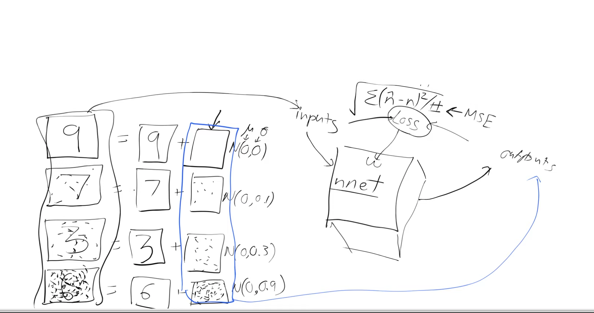
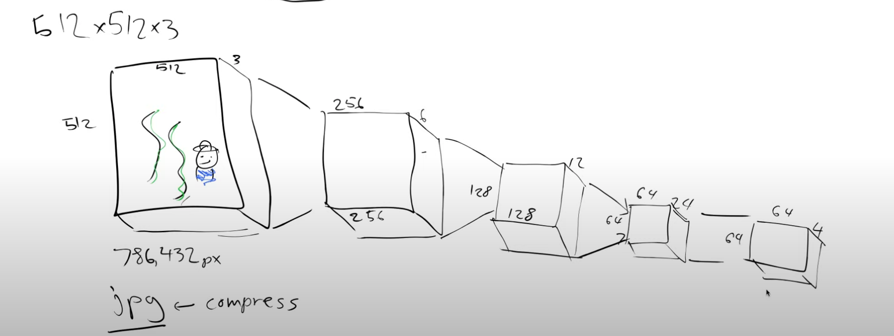
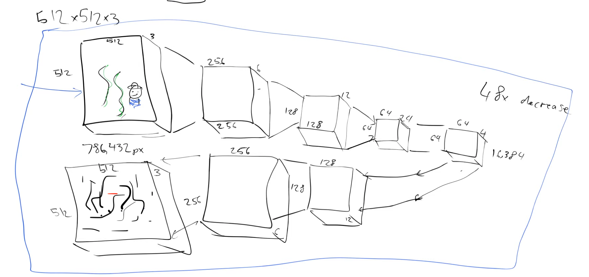

Below are some notes I took following Jeremy Howard’s wonderful lecture on Stable Diffusion Lesson 9: Deep Learning Foundations to Stable Diffusion, 2022. The lecture contains much more, but I summarized what I thought to be the core ideas / bare minimum for understanding.
All the included images are screenshots from the lecture (Thanks to lesson notes by rekil156. Check it for more detailed notes).
The thought process:
Suppose we want to build a model that takes as input a random image and outputs a handwritten digit, how can we do it?
We know we can build models to recognize handwritten digits (input is an image of a handwritten digit and output is what the digit is eg 3 or 7). Perhaps then we can build a model (\(f\)) that tries to recognize the probability an image is a handwritten digit.

We can use this model to generate images of handwritten digits starting from random images. How?
Let’s say we start with 28 x 28 pixel image - of some random pixels - as input to the model above eg X3. The model spits out the probability that X3 is a handwritten digit eg \(P(X_3) = 0.02\). What if we ask the model to adjust not its weights, but the pixels of the image \(X3\) itself, such that the \(P(X3)\) is handwritten digit goes up? If we do this enough times, we eventually end up with an image of a handwritten digit.
How can the model (\(f\)) know by how much it needs to change each pixel in X in order to make it a handwritten digit? Well, computing how much change is the gradient (here showing partial derivative): \(\frac{\partial P(x3)}{\partial x3}\)
So, we want to train a function (nn) that gives us this gradient.
How do we train it?
This function tells us how close a “noisy” image or just “noise” is close to bring a handwritten digit. So, the model need to be able to quantify noise. It needs to know be able to go from img + noise -to-> img.

each input is pixels of a handwritten digit + noise from normal distribution
As humans we have a feeling for how much each of the images above is close to being a real handwritten digit. For a computer model (function) to do that, it’s hard to quantify this “feel” to it. The trick around this is if we make try to predict how much noise we added. The amount of noise tells us then how much of a digit it is (the more noise, the less like a digit).
So, we can generate this data.

And train our model to predict noise (\(n\))
Our model (nn) will have:
- Inputs -noisy digits
- Outputs - noise
- loss function - MSE, between the predicted output(noise) and the actual noise
And now we know that to turn this to that we need to remove this
And this gives us the ability to calculate the gradient of each pixel in top image to make it look like 2nd img. The NN used to do this is a UNet
The problem of large image sizes:
The computation of the gradient for each image is quite computationally intesive. It’s a lot of compute for the \(28 x 28\) pixel images of handwritten digits (think one partial derivative for each pixel of a \(28 x 28 pixel image = 784\) done multiple times). And, we don’t want to do this only for handwritten digits in black and white. We want to do this for high quality artistic images like the \(512 x 512 x 3\) channel RGB images we have = \(786,432\) pixels.
Solution: train on compressed images.
Compression allows the small size while keeping the essential information in an image to retrieve it.
How can we compress images like this effeiciently?
Idea: We pass images through successive convolutional layers with stride 2 (each time doubling the number of channels). At the end we add a few resnet like blocks to squish down the number of channels from 24 to 4.

So starting with \(512x512x3\) image, we get size of \(64x64x4\), we have compressed it by a factor of 48 (from \(786432 to 16384\) pixels).
Compression is useful only if we can decompress (get the original image back). We can think of building the reverse architecture to do this (an inverse convolution that does the opposite).

How can we get this compression algorithm?
Think of building this as one NN whose only function is to output the same image u gave as input.
Why is a model that does gives same output as input useful?
Coz we can split it in half: the part that does the compression (encoder) and the one that decompresses (decoder).
And now, if u have the decoder and the 16384 pixel image, u can get back the full 786432 pixel image.
These smaller compressed images are called “Latents”. We can pass them to our UNet above such that: - input: latents + noise - output : noise
We can subtract the output (noise) from the input (latents + noise) and get latents which we can decompress using the decoder.
NB: ⁃ This whole encoder / decoder thing is called Autoencoder or VAE (Variational Autoencoder) ⁃ This VAE is optional. We can train on the full sized images if we’re Google and have tons of TPUs everywhere.
Where is my Text
Suppose we want our handwritten digit generation model to generate a specific digit and not just anyone eg it can accept text and we tell it to generate “3” or “7” and so on. How can we do this?
During training, we can pass it as input not just the img+noise but also a one-hot-encoded version of the number 3

This information (that the input image is a 3) is now avaiable for the model to make use of. It can now predict not just the noise but also that the original image is a 3 (we’re passing two things into this model, the image pixels and what digit it is in one hot encoded vector form).
After training if we feed in “3”(one hot encoded) and the noise (img), it is going to say the noise is everything that doesn’t represent the number three. So this is called guidance. We can use that guidance to guide the model as to what image we want it to create.
But, we can’t do one-hot-encoded for everything. That would mean we need a one-hot-encoded representation of every sentence possible (infinite) eg “astronaut riding a horse”. What can we do instead?
For each image on the internet (where we collect data), there are usually alt tags (they will have some description of the image).

We can create two NNs / functions / models, one for the image and the other for the text. Each function spits out some random numbers (we will call them features). We then want the numbers / features for each model to be as close as possible to the numbers / features for its text and not at all like the features for other imgs & their txts. We make numbers similar via dot product

We can now think of our imgs and txt in a table. Each cell is the dot product score of img features x txt features. We want max at diagonals and small values elsewhere.

This is what we know as embeddings.
Our loss function for this model can be defined as adding all the diagonal elements and subtracting from it the off-diagonal elements.

We can feed our text encoder with “a graceful swan”, “some beautiful swan”, “such a lovely swan” and these should all give very similar embeddings because these would all represent very similar images of swans. We’ve successfully created two models that put text and images into the same space, a multimodal(using more than one mode-images and text) model. Now, when we go back to our UNet model, we pass it these text features (which we know correspond to image features).
This pair of models are called : CLIP,Contrastive Language-Image Pre-training. The loss we are using is called contrastive loss.
So, in summary, we have:
- A Unet that can denoise latents into unnoisy latents
- The decoder of VAE that can take latents and create an image
- The CLIP text encoder which can guide the Unet with captions
Jargon:
The gradients that we calculate in UNet are called the score function.
Creating noise:
We pick a t at random and use the correspinding sigma as noise (or beta in some papers). This is called time step.